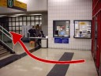

Location
The 3D Motion Capture Laboratory is in G1415, AC1, located on the 1/F in the "Green Zone".Directions
If you are coming from outside, follow the steps 1-10.
If you are within City U, follow the steps 7-10.
- Take MTR and get off at Kowloon Tong station. Go to Exit C if you are taking the Kwun Tong line.
- Follow the sign and go to Festival Walk.
- In Festival Walk, go to level LG-1 and find the escalator in level LG-1 that leads to City University of Hong Kong Pedestrian Subway.
- After walking through the Pedestrian Subway, go straight and you will see the Academic Building in front of you.
- Enter through the red door as indicated below:
- Right after entering through the red door to the Academic Building, find Lift 7 that is located on the right hand side:
- Take Lift 7 and go down to the 1st floor.
- After exiting the lift on the 1st floor, turn right and follow the pedestrian road on the right.
- Enter through the red door on your right hand side.

- Our lab is located on the right hand side:
